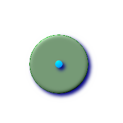
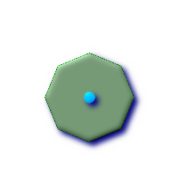
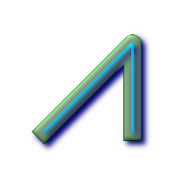

Name
ST_Buffer — (T) For geometry: Returns a geometry that represents all points whose distance from this Geometry is less than or equal to distance. Calculations are in the Spatial Reference System of this Geometry. For geography: Uses a planar transform wrapper. Introduced in 1.5 support for different end cap and mitre settings to control shape. buffer_style options: quad_segs=#,endcap=round|flat|square,join=round|mitre|bevel,mitre_limit=#.#
Synopsis
geometry ST_Buffer(geometry g1, float radius_of_buffer);
geometry ST_Buffer(geometry g1, float radius_of_buffer, integer num_seg_quarter_circle);
geometry ST_Buffer(geometry g1, float radius_of_buffer, text buffer_style_parameters);
geography ST_Buffer(geography g1, float radius_of_buffer_in_meters);
Description
Returns a geometry/geography that represents all points whose distance from this Geometry/geography is less than or equal to distance.
Geometry: Calculations are in the Spatial Reference System of the geometry. Introduced in 1.5 support for different end cap and mitre settings to control shape.
![[Note]](images/note.png) | |
Negative radii: For polygons, a negative radius can be used, which will shrink the polygon rather than expanding it. |
| |
Geography: For geography this is really a thin wrapper around the geometry implementation. It first determines the best SRID that fits the bounding box of the geography object (favoring UTM, Lambert Azimuthal Equal Area (LAEA) north/south pole, and falling back on mercator in worst case scenario) and then buffers in that planar spatial ref and retransforms back to WGS84 geography. |
 For geography this may not behave as expected if object is sufficiently large that it falls between two UTM zones or crosses the dateline
For geography this may not behave as expected if object is sufficiently large that it falls between two UTM zones or crosses the dateline
Availability: 1.5 - ST_Buffer was enhanced to support different endcaps and join types. These are useful for example to convert road linestrings into polygon roads with flat or square edges instead of rounded edges. Thin wrapper for geography was added. - requires GEOS >= 3.2 to take advantage of advanced geometry functionality.
The optional third parameter (currently only applies to geometry) can either specify number of segments used to approximate a quarter circle (integer case, defaults to 8) or a list of blank-separated key=value pairs (string case) to tweak operations as follows:
'quad_segs=#' : number of segments used to approximate a quarter circle (defaults to 8).
'endcap=round|flat|square' : endcap style (defaults to "round", needs GEOS-3.2 or higher for a different value). 'butt' is also accepted as a synonym for 'flat'.
'join=round|mitre|bevel' : join style (defaults to "round", needs GEOS-3.2 or higher for a different value). 'miter' is also accepted as a synonym for 'mitre'.
'mitre_limit=#.#' : mitre ratio limit (only affects mitered join style). 'miter_limit' is also accepted as a synonym for 'mitre_limit'.
Units of radius are measured in units of the spatial reference system.
The inputs can be POINTS, MULTIPOINTS, LINESTRINGS, MULTILINESTRINGS, POLYGONS, MULTIPOLYGONS, and GeometryCollections.
| |
This function ignores the third dimension (z) and will always give a 2-d buffer even when presented with a 3d-geometry. |
Performed by the GEOS module.
 This method implements the OpenGIS Simple Features
Implementation Specification for SQL 1.1. s2.1.1.3
This method implements the OpenGIS Simple Features
Implementation Specification for SQL 1.1. s2.1.1.3
This method implements the SQL/MM specification. SQL-MM 3: 5.1.17
| |
People often make the mistake of using this function to try to do radius searches. Creating a buffer to to a radius search is slow and pointless. Use ST_DWithin instead. |
Examples
 quad_segs=8 (default)
SELECT ST_Buffer(
ST_GeomFromText('POINT(100 90)'),
50, 'quad_segs=8');
|  quad_segs=2 (lame)
SELECT ST_Buffer(
ST_GeomFromText('POINT(100 90)'),
50, 'quad_segs=2');
| |
endcap=round join=round (default)
SELECT ST_Buffer( ST_GeomFromText( 'LINESTRING(50 50,150 150,150 50)' ), 10, 'endcap=round join=round');
|  endcap=square
SELECT ST_Buffer( ST_GeomFromText( 'LINESTRING(50 50,150 150,150 50)' ), 10, 'endcap=square join=round');
| endcap=flat
SELECT ST_Buffer( ST_GeomFromText( 'LINESTRING(50 50,150 150,150 50)' ), 10, 'endcap=flat join=round');
|
join=bevel
SELECT ST_Buffer( ST_GeomFromText( 'LINESTRING(50 50,150 150,150 50)' ), 10, 'join=bevel');
| join=mitre mitre_limit=5.0 (default mitre limit)
SELECT ST_Buffer( ST_GeomFromText( 'LINESTRING(50 50,150 150,150 50)' ), 10, 'join=mitre mitre_limit=5.0');
|  join=mitre mitre_limit=1
SELECT ST_Buffer( ST_GeomFromText( 'LINESTRING(50 50,150 150,150 50)' ), 10, 'join=mitre mitre_limit=1.0');
|
--A buffered point approximates a circle
-- A buffered point forcing approximation of (see diagram)
-- 2 points per circle is poly with 8 sides (see diagram)
SELECT ST_NPoints(ST_Buffer(ST_GeomFromText('POINT(100 90)'), 50)) As promisingcircle_pcount,
ST_NPoints(ST_Buffer(ST_GeomFromText('POINT(100 90)'), 50, 2)) As lamecircle_pcount;
promisingcircle_pcount | lamecircle_pcount
------------------------+-------------------
33 | 9
--A lighter but lamer circle
-- only 2 points per quarter circle is an octagon
--Below is a 100 meter octagon
-- Note coordinates are in NAD 83 long lat which we transform
to Mass state plane meter and then buffer to get measurements in meters;
SELECT ST_AsText(ST_Buffer(
ST_Transform(
ST_SetSRID(ST_MakePoint(-71.063526, 42.35785),4269), 26986)
,100,2)) As octagon;
----------------------
POLYGON((236057.59057465 900908.759918696,236028.301252769 900838.049240578,235
957.59057465 900808.759918696,235886.879896532 900838.049240578,235857.59057465
900908.759918696,235886.879896532 900979.470596815,235957.59057465 901008.759918
696,236028.301252769 900979.470596815,236057.59057465 900908.759918696))